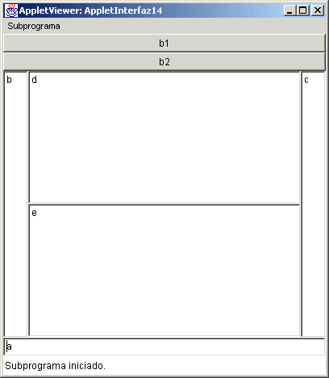

Examen Integrador
1.
Supón que tenemos un arreglo de 20 elementos de la clase Alumno llamado arr
y que en la clase existe un método entero llamada calculo,y que hay un
campo de texto llamado t ¿Cuál de las siguientes instrucciones está bien
utilizada si i tiene un valor entre 1 y 20?:
a. t.setText("" + arr[i].calculo());
b. t.setText("" +
arr[i](calculo));
c. t.setText("" + (arr[i].calculo));
d. t.setText("" + arr[i].calculo);
2.
Suponiendo que el objeto p es una instancia de la siguiente clase:
public class Persona
{
public Persona () { }
public
double obtenSueldo(String nombre)
{
return 5385.00;
}
};
¿Cuál
de las siguientes líneas es un estatuto correcto en Java, si p es un objeto
creado de la clase Persona?
a. obtenSueldo.p("Roberto");
b.
Persona x = obtenSueldo("Juan");
c. double c = p.obtenSueldo("Alex");
d.
string s = Persona.obtenSueldo(p);
Correcta: c ya que debes mandar un String como parámetro al método y este regresa un double
3.
Dado el siguiente segmento de código:
int m, x; m
= 1;
x = 0;
while ( m <= 5 )
{
if ( m%2 != 0 )
x = x + m;
m++;
}
¿Cuál
es el valor de la variable x al
salir del ciclo?
a) 4
b) 9
c) 10
d) se cicla
Correcta
: 9 ya que lo que esta haciendo es sumar los impares de 1 a 5, 1 + 3 +
5 = 9
4.
Dada las siguientes definiciones en Java:
public
class Articulo
{
private int cveArt;
private double precio;
private String cveDesc;
public
Articulo( ) { cveArt=0; precio=0.0; cveDesc=""; }
public Articulo
( int clave, double precioArt, String claveDesc )
{
cveArt=clave;
precio = precioArt;
cveDesc= claveDesc; }
public void
aumentaPrecio( double porc ) {precio=precio*(1+ porc); }
public
void
obtenCveArt( ) { return cveArt; }
public
void cambiaClaveDesc(String cveNueva ) { cveDesc=cveNueva; }
}
y teniendo la instrucciónes:
Articulo lapiz = new Lapiz();
Articulo borrador = new Articulo(28, 8.55, "n");
¿Cuál
de las siguientes aseveraciones es Verdadera?
a. cveNueva es una variable
de instancia (atributo) de los objetos de la clase Articulo.
b. La definición provoca
que se ejecute 1 vez el constructor.
c. aumentaPrecio es un
constructor de la clase Articulo
d. Los objetos de la clase
Articulo tienen 3 variables de instancia (atributos).
Correcta
: d, ya que se usa dos veces el constructor, aumentaPrecio es un método y
no solo es una la variable de instancia.
5.
Selecciona la opción que mejor describa al siguiente segmento de código:
int arr[] = new int[20];
for (int i = 0; i < arr.length ; i++)
arr[++i ] = 0;
a. Inicializa en cero todos
los elementos del arreglo
b. Inicializa en cero los
elementos en casillas pares del arreglo (0, 2, 4, ...etc.)
c. Inicializa en cero los
elementos en casillas impares del arreglo (1,3, 5,...etc.)
d. No compila.
Correcta:
c ya que como empieza con ++i, primero incrementa la i entonces empieza con
1 y como el ciclo del for tambien incrementa la i, entonces se incrementa
dos veces, entonces es 1, 3, 5, etc.
6.
Suponiendo
que n tiene un valor entero positivo; ¿Qué valor tiene la variable x después
de ejecutar la siguiente secuencia de estatutos?
int x = 1;
for (int k = 1; k <= n; k++)
x = x *
n;
a) x toma el valor de 1
b) x toma el valor de x *
k
c) x toma el valor de 1 *
2 * 3 * ... * n
d) x toma el valor de n *
n * n ... * n (donde n se multiplica n veces)
Correcta: d, ya que empieza con 1 la x y se multiplica por n, y luego despues por n de nuevo y asi sucesivamente.
7.
Dí que valor toma la variable z
después de ejecutar la siguiente secuencia de estatutos:
int z = 0;
for
(int k = 0; k < 5; k = k + 2)
for (int n = 2; n > -1;
n--)
z++;
a) 6 b) 9 c) 12 d) 15
Correcta
: b ya que pasa tres veces por el primer for y otras tres veces en el
segundo for.
8. Dada el siguiente Applet:

Y se tiene el siguiente código:
setLayout(new BorderLayout());
p1 = new Panel(new GridLayout(2,1));
p2 = new Panel(new GridLayout(2,1));
t1 = new TextField("a");
t2 = new TextField("b");
t3 = new TextField("c");
t4 = new TextField("d");
t5 = new TextField("e");
b1 = new Button("b1");
b2 = new Button("b2");
add(t1, BorderLayout.SOUTH);
add(t2, BorderLayout.WEST);
add(t3, BorderLayout.EAST);
p1.add(t4);
p1.add(t5);
¿Cuál de las siguientes opciones contiene el código que lo muestra?
a)
p2.add(b1);
p2.add(b2);
add(p1, BorderLayout.CENTER);
add(p2, BorderLayout.NORTH);
b)
p2.add(b2);
p2.add(b1);
add(p2, BorderLayout.CENTER);
add(p1, BorderLayout.NORTH);
c)
p2.add(b1);
p2.add(b2);
add(p1, BorderLayout.NORTH);
add(p2, BorderLayout.CENTER);
d)
p2.add(b2);
p2.add(b1);
add(p2, BorderLayout.NORTH);
add(p1, BorderLayout.CENTER);
Correcta a) ya que de otra manera se invierten los botones o se invierten los paneles.
9.
¿Cuál de las siguientes es una
aseveración falsa con respecto a java Swing?
a) Da mas facilidades para utilizar los elementos de interfaz gráfica que java AWT
b) Para utilizarla debes usar import javax.Swing.*;
c) Puede manejar dibujos dentro de los elementos de interfaz gráfica.
d) JApplet sirve para manejar applet con facilidades adicionales que un Applet.
10. Suponiendo que una clase ha sido definida bajo el siguiente encabezado en Java:
public
class Uno extends Dos
¿cuál de las siguientes aseveraciones es falsa?
a.
Los objetos de la clase Dos heredan todo lo que
contienen los objetos de la clase Uno.
b.
Los objetos de la clase Uno pueden recibir mensajes que
ejecutan métodos de la clase Dos.
c.
Los objetos de la clase Uno heredan todo lo que
contienen los objetos de la clase Dos.
d.
Los objetos de la clase Uno pueden recibir mensajes que
ejecutan métodos de la clase Uno.
Correcta a) Ya que Uno hereda de la clase Dos y
entonces Dos no puede heredar de la clase Uno.
11.
¿Cuales son los métodos que debe haber mínimo en cualquier clase
por cada variable de instancia?
a)
equals() y toString()
b)
constructor
vacio y constructor con parámetros.
c)
modificador y de acceso.
d) setX y getX
Correcta:
c, ya que por cada variable de instancia debe existir un metodo que
modifique la variable y uno que obtenga su valor.
12.
¿Cuál de los siguientes estatutos de asignación en Java está
construido correctamente?
a)
a =/ b;
b)
auxiliar + temporal = valor;
c)
precio = 1,000;
d)
x = (a + b)/ (c + d);
Correcta : d, ya que
todos los demas tienen error o en 1,000 (no ,) o asignan al reves, o es /=
13.
¿Cuál es la salida de la siguiente serie de estatutos
en Java?
int a =10, b=2;
System.out.println( a*a++ + "
" + a + " " + ++b+a);
a) 100 11 13
b) 110 11 13
c) 100 11 14
d) 110
11 14
Correcta : c ya que primero se multiplica por 10 y luego le suma 1, entonces primero imprime 110 luego 11 y luego primero a b le suma 1 entonces suma 3 mas 11 quedan 14.
14. Es un enununciado falso en Java
a)
Estrictamente, para crear un objeto se debe utilizar la palabra new.
b)
Un método que es declarado como static en una clase, puede ser
llamado desde un objeto de la misma clase.
c)
Una
clase declarada como final puede heredar a otras clases.
d) Si no se crea un objeto de alguna clase y este trata de usar un método, entonces lanzará la excepcion NullPointerException.
Correcta:
c Ya que una clase estatica no puede heredar a otras clases.
15.
Suponiendo que tengo la clase A con el método toString() declarada en el y
la clase B que hereda de la clase A,sin redefinir elmétodo toString() en
ella. ¿Cuál de las siguientes aseveraciones es verdadera?
a) al usar b.toString() usa el método toString() de la clase Object.
b) si dentro de la clase B se tiene super.toString() se utiliza el método de la clase A
c) si dentro de la clase A se utiliza el método super.toString() se utiliza el método toString() de la clase A.
d) si uso b.toString() en cualquier aplicacion siempre usa el método toString() de la clase B
Correcta:
b) ya que todas las demas son falsas, b.toString() usa el de la clase A,
super().toString() de A usa el de la clase Object.
16.
public class Animal {
public String habla() {
return "No se puede";
}
}
public class Buey extends Animal {
public String habla() {
return "Buu";
}
}
public class Serpiente extends Animal {
}
Y asumiendo que tengo la aplicación:
public class AplicacionHerencia {
public static void main(String[] args) {
Buey toro = new Buey();
Animal animal = new Buey();
Serpiente serpiente = new Animal();
System.out.println("Toro dice : " + toro.habla() );
System.out.println("Animal dice : " + animal.habla() );
System.out.println("Serpiente dice : " + serpiente.habla() );
}
}
¿Qué será lo que se
despliega en la pantalla:
a)
Toro dice: No se puede
Animal dice: Buu
Serpiente dice: Buu
b)
Toro dice: Buu
Animal dice: Buu
Serpiente dice: No se puede
c)
Toro dice: No se puede
Animal dice: No se puede
Serpiente dice: Buu
d)
Toro dice: No se puede
Animal dice: Buu
Serpiente dice: No se puede
Correcta :
b Ya que buey habla como "Buu" y luego el animal fue
creado como Buey entonces habla como "Buu" y al final serpiente
toma de Animal y habla "No se puede"
17. ¿Cuál es el error de ejecución que aparecerá con la siguiente intstrucción?
System.out.println("" + 3 / 0);
a. NullPointerException
b. NumberFormatException
c. ArithmeticException
d. NoSuchElementException
Correcta: c Ya que las demas son cuando no creas un objeto y lo
usas, o cuando tienes letras en lugar de números o cuando no hay mas datos
a tokenizar en un StringTokenizer.
18.
¿Cual
es la instrucción que se requiere para borrar todos los elementos del
objeto a de la clase Vector?
a)
a.removeElements();
b)
removeElements(a);
c)
a.removeAllElements();
d)
removeAllElements(a);
Correcta
c) ya que el metodo se llama removeAllElements() y es void.
19.
¿Cual de las siguientes listadas abajo debe conpletar el
código siguiente:?
ta1.setText("");
for (int i=0; i < vector.size(); i++) {
// AQUI VA LA INSTRUCCION
}
Asumiendo que vector es un objeto de la clase Vector con algunos objetos en
el.
a)
ta1.append("" +
vector.get() + "\n");
b)
ta1.append("" +
vector.get(i) + "\n");
c)
ta1.append("" +
vector(i).get() + "\n");
d)
ta1.append("" +
vector(i).get() + "\n");
Correcta: b, ya que el
metodo get de la clase Vector necesita el indice y este seria el i.
20.
StringTokenizer st = new StringTokenizer("La posición es incorrecta", "i");
Al usar los métodos del StringTokenizer el número de tokens que se extraeran sera de:
a. ninguno
b. 3
c. 4
d. 5
Respuesta correcta: 4
Retroalimentacion: Ya que tenemos declarada la (i) como delimitador, tenemos cuatro "tokens" entre las i's.